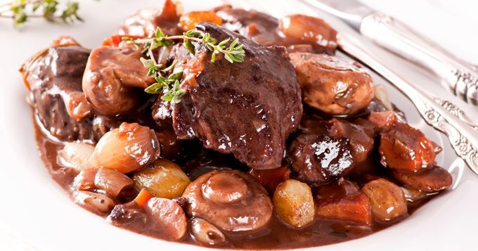

Index
Beef bourguignon recipe source
Beef Bourguignon

Description
A traditional French dish of slow cooked beef in a red wine sauce,
with small onions, button mushrooms and bacon lardons.
It's traditionally named from the Burgundy region in France, where it originated.
It’s cooked until the meat is falling apart,
and the wine-rich gravy thickens slightly to coat the meat.
It’s a comforting, slow cooked dish perfect for mash potato,
soft polenta or simply some crusty bread for mopping up the gravy.
Ingredients
- 1.6kg braising steak, cut into large chunks
- 3 bay leaves
- small bunch thyme
- 2 bottles cheap red wine
- 2 tbsp oil
- 3 large or 6 normal carrots, cut into large chunks
- 2 onions, roughly chopped
- 3 tbsp plain flour
- 1 tbsp tomato purée
To serve
- small knob butter
- 300g bacon lardons
- 500g pearl onions or small shallots, peeled
- 400g mushrooms, halved
- chopped parsley
Steps
- Tip 1.6kg braising steak, cut into large chunks, into a large bowl with 3 bay leaves, a small bunch of thyme, 2 bottles of red wine and some pepper, then cover and leave in the fridge overnight.
- Heat the oven to 200C/180C fan/gas 6.
- Place a colander over another large bowl and strain the marinated meat, keeping the wine.
- Heat 1 tbsp oil in a large frying pan, then brown the meat in batches, transferring to a plate once browned. When all the meat is browned, pour a little wine into the now-empty frying pan and bubble to release any caramelised bits from the pan.
- Heat 1 tbsp oil in a large casserole and fry 3 large or 6 normal carrots, cut into large chunks, and 2 roughly chopped onions until they start to colour. Stir in 3 tbsp plain flour for 1 min, then add 1 tbsp tomato purée.
- Add the beef and any juices, the wine from the frying pan and the rest of the wine and herbs. Season and bring to a simmer. Give everything a good stir, then cover.
- Transfer to the oven and bake for 2 hrs until the meat is really tender. Cool. Will freeze for up to 3 months.
- To serve, defrost completely overnight in the fridge if frozen, then place on a low heat to warm through.
- Meanwhile, heat a small knob of butter in a frying pan and add 300g bacon lardons and 500g peeled pearl onions or small shallots. Sizzle for about 10 mins until the bacon starts to crisp and the onions soften and colour.
- Add 400g halved mushrooms and fry for another 5 mins, then stir everything into the stew and heat for 10 mins more. Serve scattered with chopped parsley.